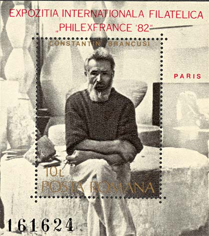

Constantin Brancusi a fost un sculptor român care s-a pregatit iniţial în meseriile de tâmplar şi pietrar. El s-a stabilit la Paris, în 1904, unde printre influentele sale timpurii au fost incluse arta africana, precum şi cea orientala. Cu toate ca Rodin a fost o alta influenta timpurie, Brancusi a decis ca doreste să faca o munca mai puţin sofisticata şi a început o cautare evolutivă pentru o formă pură. În timp ce el nu respinge în întregime lumea naturală, Brâncuşi reuşeşte fără îndoială transmiterea unui sentiment de gravitate, prin reducerea operei sale la câteva elemente de bază. În mod paradoxal, acest proces, de asemenea, tinde sa evidenţieze complexitatea gândirii care a fost investită în creaţiile sale. Sursa.
Una dintre lucrarile sale timpurii, Cumintenia pamantului, din 1907, este o reflectare a filozofiei lui Brancusi, care îşi are rdcinile într-o înţelepciune care este anterioară creştinismului. Sculptura arată o femeie care este foarte concentrată asupra ei însăşi, figura ei emanând un mister care o transfigureaza într-un portret universal. Statuia exprima sentimentul autorului, de ataşament faţă de pamânt, dar sursa de inspiraţie a operei sale este de fapt necunoscuta. .
 |
 |
 |
Aceasta statuie a fost confiscată de regimul comunist de la proprietarul ei, arhitectul Gheorghe Romaşcu, care a cumparat-o direct de la Brâncuşi în 1910. Moştenitorii lui Romascu s-au luptat timp de peste 25 de ani, prin sistemul juridic, cu guvernul român, pentru a reintra în posesia statuii. Între timp statuia s-a aflat în majoritatea timpului în custodia Muzeului Naţional de Arta.
Fiica lui Gheorghe Romascu, d-na Paula Ionescu, i-a explicat justitiei şi presei că statuia s-a aflat în posesia tatalui ei timp de 47 de ani. În anul 1957 miliţia a luat statuia "pentru o expoziţie" si nu a returnat-o. Mai târziu funcţionari de stat au inventat povestea ca statuia ar fi fost cumparată de la arh. Romaşcu de catre stat, dar niciodata ei nu au putut prezenta nici cea mai mica dovadă în fata justiţiei.
|
 |
 |
Chiar dacă d-na Ionescu avea documente care dovedeau ca ea este unul dintre cei doi proprietari legali ai statuii, ea a primit în decursul anilor decizii dupa decizii nefavorabile din partea sistemul juridic românesc. În cele din urma, în anul 2016, în urma unei hotărâri judecătoreşti definitive, statul român a restituit statuia proprietarilor ei de drept.
Acest lucru nu înseamna că statuia le aparţine pe deplin acestora. Fiind declarată un "tezaur naţional", ea nu pot fi exportata definitiv şi vândută în strainatate, unde are o valoare de piaţa mai mare decât în România. În urma unor negocieri cu avocatii mostenitorilor, statul i-a oferit familiei 11 milioane de Euro, din care 5 milioane să fi fost acoperite de stat, iar alte 6 milioane urmau sa fie colectate în urma unei subscripţii publice. Doar 1,2 milioane au fost însă colectate, drept care s-a renunţat la subscripţie, iar banii urmează să fie restituiţi donatorilor. Urmează o nouă evaluare a statuii şi apoi o decizie a statului dacă este capabil să acopere suma ce va rezulta.
La un moment dat, când statuia era confiscata, ea a fost montată pe un soclu, sub supravegherea unor reprezentanţi ai statului. Atunci când acest lucru a fost facut, picioarele statuii s-au spart si desprins, a spus Paula Ionescu. Înainte de acest accident statuia a fost evaluata la 30 milioane de dolari, dar accidentul a redus valoarea statuii la jumatate.